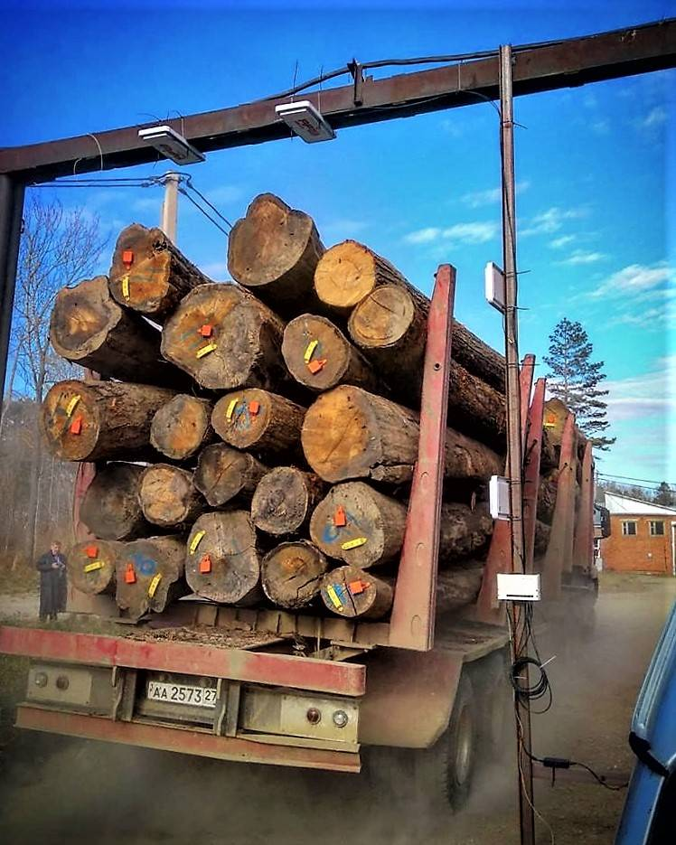
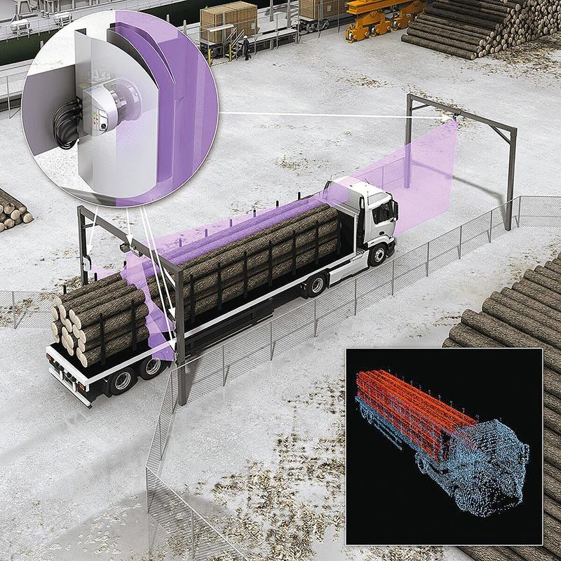

Автоматизированные комплексы по измерению объемов древесины
Автоматизированный учет древесины – самый короткий путь к эффективному управлению лесным комплексом как на государственном уровне, так и в масштабах отдельного предприятия. Высокотехнологичные решения автоматизируют ручной труд, но главное – показывают высокую точность и производительность. Именно такие программно-технические средства для бесконтактного автоматизированного измерения объёма древесины создала немецкая компания SICK. Альтернативой устаревшим методам и подходам сегодня стали высокотехнологичные решения, позволяющие автоматизировать ручной труд и эффективно решать рутинные задачи. Именно такие решения для различных отраслей промышленности создает немецкая компания SICK. Специализируясь в области промышленной автоматизации, SICK выпускает широкий спектр датчиков и систем на базе лазерных сканеров и технологий машинного зрения.SICK: автоматизированный учёт лесоматериалов Флагманский продукт SICK для деревообрабатывающей промышленности – программно-технические средства для бесконтактного автоматизированного измерения объёма древесины. Их использование позволяет значительно снизить погрешность в сравнении с ручным и весовым способами, а также существенно сократить количество работников, выполняющих технологические операции по измерению и определению объёма лесоматериалов.
Система LVM (Load Volume Measurement)
Система LVM (Load Volume Measurement) предназначена для автоматизированного получения данных о размерах груза транспортного средства. Измерения проводят безопасные для глаз лазерные датчики 2D LIDARs (LMS). В момент проезда автомобиля под системой сканеры захватывают его профиль с нескольких сторон. Полученные данные передают посредством TCP/IP протокола в контроллер системы LVM. На основе облака точек, сформированного 2D-профилями транспортного средства и уникальных алгоритмов обработки, рассчитывают объём груза в кузове. 
5 страница 1 странца